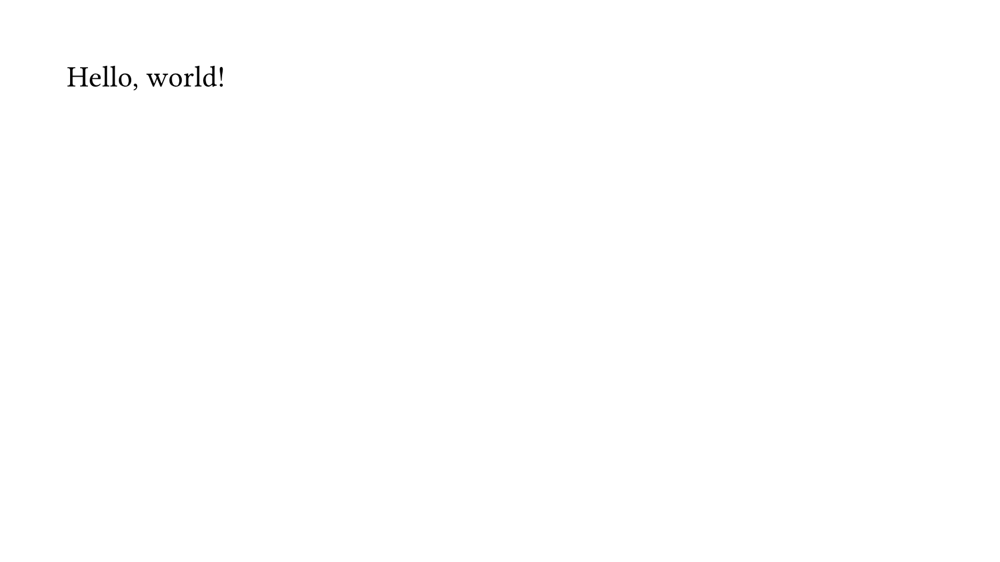
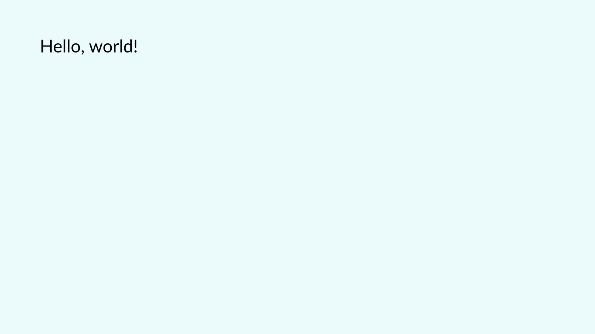
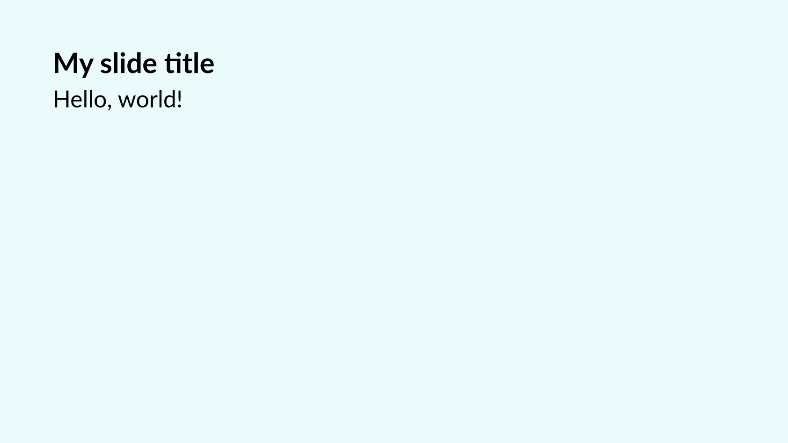
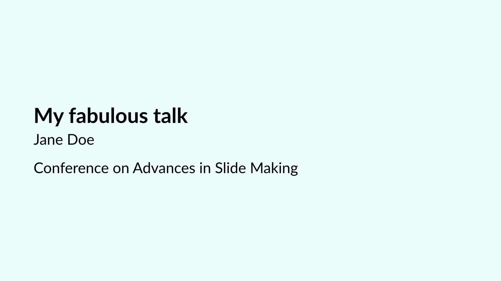
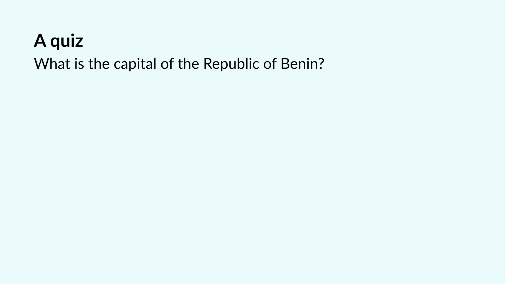
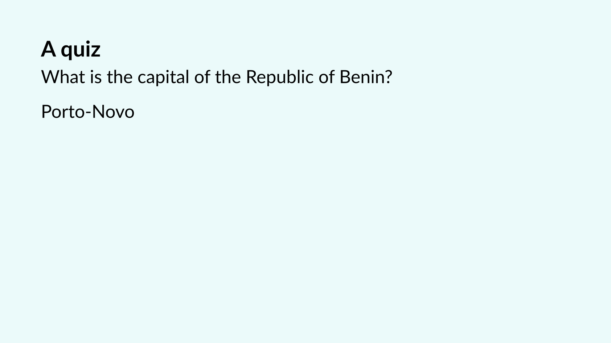

Getting started
You can find this package in the official Typst package repository. To use it, start your document with
#import "@preview/polylux:0.4.0": *You now have two options: 1. Start from one of the templates. If you want just a minimal scaffold to get you started, try out the basic template by running typst init @preview/basic-polylux:0.1.0 your-cool-project. 2. Start from scratch.
We will choose the second option for this tutorial. Let’s start with the absolute minimal effort. What characterises a set of slides? Well, each slide (or PDF page, as we already established) has specific dimensions. Some time ago, a 4:3 format was common, nowadays 16:9 is used more often. Typst has those built in:
#set page(paper: "presentation-16-9")You probably don’t want your audience to carry magnifying glasses, so let’s set the font size to something readable from the last row:
#set text(size: 25pt)We should be ready do go to create some actual slides now. We will use the function slide for this, which is kind of at the core of this package.
// Remember to actually import Polylux before this!
#slide[
Hello, world!
]And here is the result (the gray border is not part of the output but it makes the slide easier to see here):

Already kinda looks like a slide, but also a bit boring, maybe. We should add a title slide before that so that our audience actually knows what talk they are attending. Also, let us choose a nicer font and maybe add some colour? We modify the #set page and #set text commands for that:
#set page(paper: "presentation-16-9", fill: teal.lighten(90%))
#set text(size: 25pt, font: "Lato")
#slide[
#set align(horizon)
= My fabulous talk
Jane Doe
Conference on Advances in Slide Making
]
#slide[
Hello, world!
]

Not bad, right? Another thing that is usually a good idea is to have a title on each slide. That is also no big deal by using off-the-shelf Typst features, so let’s modify our first slide:
#slide[
== My slide title
Hello, world!
]This is starting to look like a real presentation:


So what?
To be honest, everything we did so far would have been just as easy without using Polylux at all. So why should you care about it?
Consider the following situation: You have a slide where parts of the content appear or disappear, or the colour of some text changes, or some other small-sized change. Would you like to duplicate the whole slide just so to create this affect? And then maintain multiple copies of the same content, making sure never to forget updating all copies when your content evolves? Of course you wouldn’t and, gladly, Polylux can handle this for you.
This kind of feature is called dynamic content or overlays (loosely speaking, you might also say animations but that might be a bit of a stretch, nothing actually “moves” on PDF pages).
So how does that work in Polylux? As a quick example, let’s add a little quiz to our slides:
#slide[
== A quiz
What is the capital of the Republic of Benin?
#show: later
Porto-Novo
]



Note how two more slides have been created even though we declared only one.
The next sections will explain dynamic content in Polylux in all its details.
For reference, here is the full source code for the slides we developed in this section:
#import "@preview/polylux:0.4.0": *
#set page(paper: "presentation-16-9", fill: teal.lighten(90%))
#set text(size: 25pt, font: "Lato")
#slide[
#set align(horizon)
= My fabulous talk
Jane Doe
Conference on Advances in Slide Making
]
#slide[
== My slide title
Hello, world!
]
#slide[
== A quiz
What is the capital of the Republic of Benin?
#show: later
Porto-Novo
]